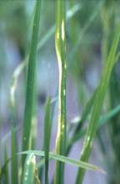
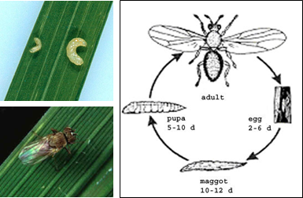

PESTS OF RICE (BORERS AND FOLIAGE FEEDERS) :: Major Pests :: Whorl Maggot
8. Whorl maggot: Hydrellia sasakii (Ephydridae: Diptera)
Distribution and status: Philippines
|
 |
Pinholes and patches (IRRI) |
Bionomics: The adult is a small dull grey fly. Maggot is 2 mm in length and feeds on the tender tissue inside the whorl. It is yellowish white in colour.
 |
Rice whorl maggot (IRRI) |
Management
- Apply carbofuran 3G 10 kg or cartap hydrochloride 4 G 18.75-25.0 kg or fipronil 0.3 G 16.70 - 25.0 kg shortly after transplanting.
- Spray endosulfan 35 EC 1.0 L or quinalphos 25 EC 1.0 L or ethofenoprox 10 EC 500-750 ml or fipronil 5 SC 1.0 -1.5 L or in 500 L water/ha.